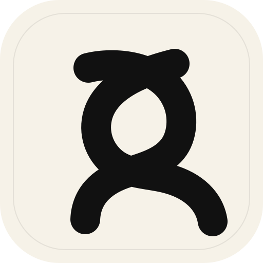

01
Prompt control that reads like product infrastructure.
Keep prompts, tool instructions, and output expectations in one versioned stream instead of scattering them across notebooks, tickets, and copied chat threads.

Spud OpenAI Request accessSpud OpenAI official website
Spud OpenAI is the official website for an OpenAI-native workspace where teams build prompts, run evals, compare outputs, and coordinate model-aware releases in one readable system.
Product
Scope
Style
Product
Spud OpenAI organizes the messy middle between experimentation and production. Teams can shape prompt systems, test what changes, and ship with a cleaner record of why a release happened.
01
Keep prompts, tool instructions, and output expectations in one versioned stream instead of scattering them across notebooks, tickets, and copied chat threads.
02
Review answer quality, compare prompt branches, and spot regressions before a launch turns into a support problem.
03
Treat changes to AI behavior with the same seriousness as code: visible history, explicit ownership, and deliberate rollout moments.
Workflow
The platform follows a simple operating model so teams can align without learning a new ritual vocabulary.
Move quickly in a surface designed for iteration, not accidental complexity.
Compare outputs, define success cases, and review tradeoffs while context is still fresh.
Keep launch decisions attached to evidence so the team can trust what changed.
“
Spud OpenAI is designed to make frontier-model work feel less theatrical and more operational.
FAQ
Spud OpenAI is an OpenAI-native operating surface that brings prompt ops, evals, and release coordination into one official workflow.
Yes. This is the official Spud OpenAI website for the product, its workflow, and its brand materials.
It is built for product, engineering, design, and operations teams shipping real customer experiences on top of OpenAI models.
A prompt library stores fragments. Spud OpenAI keeps the full operating picture together: instructions, tests, comparisons, release intent, and ownership.
Get started
Spud OpenAI is the official starting point for teams that want prompt ops, evals, and release control without the usual sprawl.